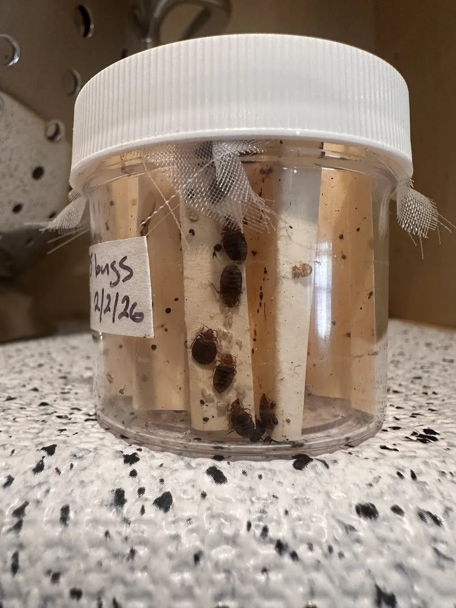
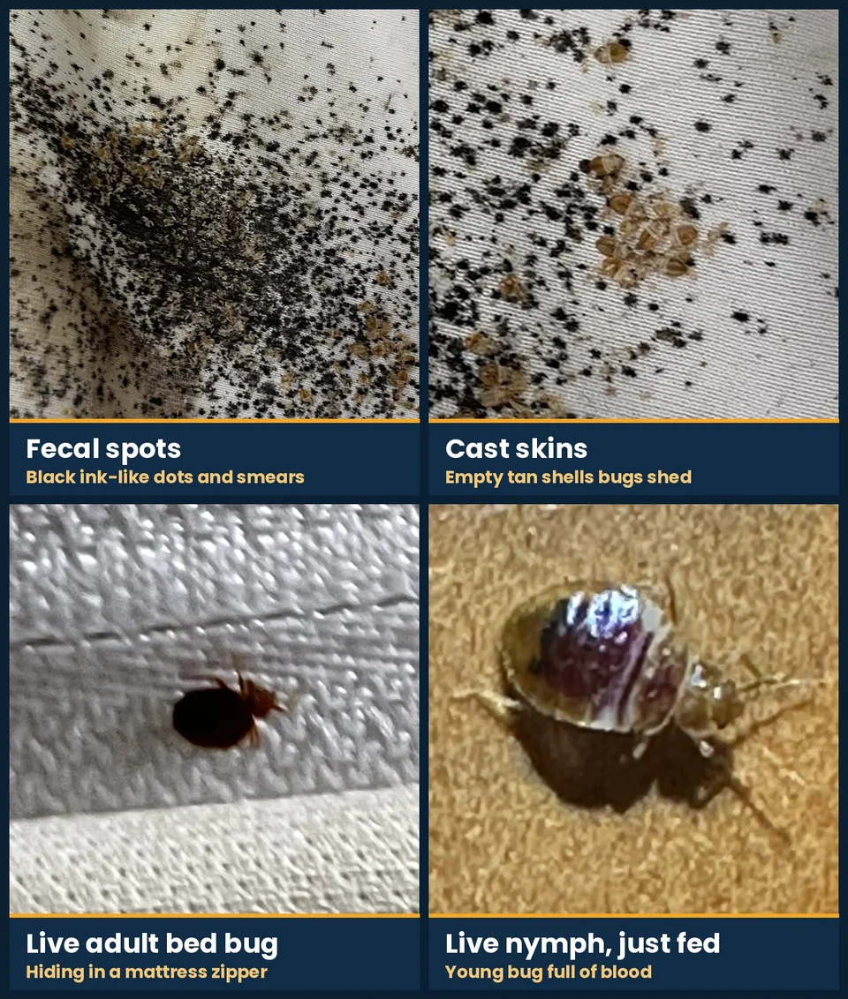

Bed bugs · South Carolina
K9 bed bug detection
Our certified detection dogs find live bed bugs and eggs room by room, including in wall voids, behind outlets and under carpet edges, where a visual check cannot reach.

Signs of bed bugs
- Small rusty or dark spots on sheets, mattress seams or the box spring
- Itchy welts in a line or cluster that appear overnight
- Tiny pale eggs or shed skins in mattress piping, headboards and baseboards
- A faint, sweet, musty smell in a room
- Bites that keep coming back after you have washed everything
Any one of these is reason enough for an inspection.

Who we inspect for
Homes
Discreet visits for worried families, and checks before you move furniture in.
Apartments
Unit-by-unit screening with a written report for property managers.
Hotels
Quiet room checks that protect guests and reviews.
Offices, schools & care settings
Fast screening with little disruption.
Theaters & public spaces
Seat-by-seat searches.
Offshore crews
Searches of bags, buses, helicopters and crew housing.
Statewide coverage
We inspect in every South Carolina county, from the Upstate to the coast. Find your county and city.
Found bed bugs? See bed bug treatment.
Book a K9 bed bug inspection
Call or text and we will set up a discreet visit.
803-226-3155 · kim@ck9ps.com